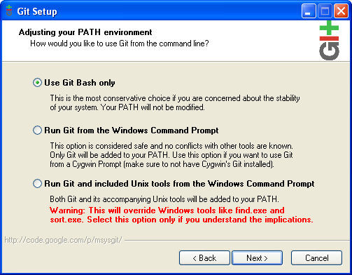
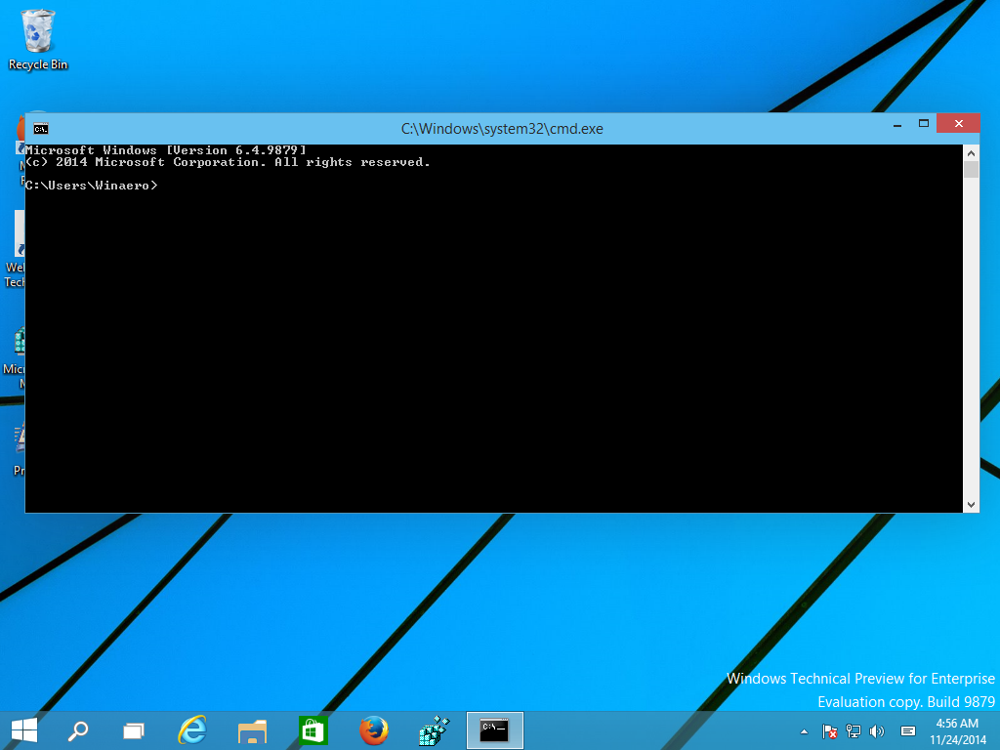
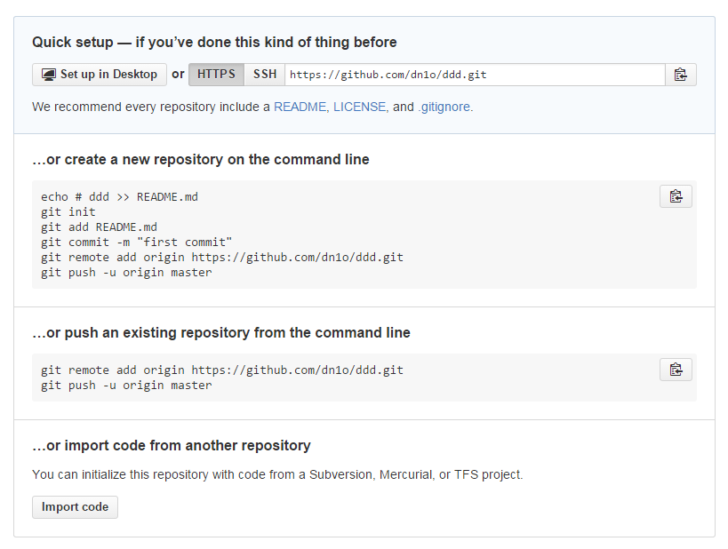

Pusti da se skida Git i Brackets i idi na GitHub da napraviš račun.
Git ti u ovom slučaju služi da gurneš sajt na internet.
Kad se kod instalacije povjavi ovaj prozor: klikni na srednji kružić da bi mogao da koristiš git iz DOS-a.
Instalacija: Samo next next next.
Instalirao si Git i Brackets i napravio si nalog na Github.
Sad upali terminal (DOS): Start, pa u search kucaj cmd, ili run pa kucaj cmd. Terminal nam stalno treba, ne gasi ga.
Trebalo bi da ti se terminal otvori ovde: C:\Users\TvojUserName. Da udjes na desktop utkucaj: cd desktop i pritisni enter. Sad si na desktopu.
Napravi novi folder sa imenom DEV, kucaj: mkdir DEV, pritisni enter.
Uđi u taj folder isto kao sto si malopre na desktop: cd DEV, enter.
Josi si u terminalu. Treba da kazemo Gitu kako se zoves i neki mail da mu damo inace nece da radi. Kucaj:
git config --global user.name "Tvoje Ime"
Pa onda:
git config --global user.email "Tvoj Mail"
Uđi na račun koji si malopre napravi na GitHub-u i klikni na "New Repository"
Daj joj ime tacno ovako: ImeKojimSiSeRegistrovao.github.io, klikni "Create Repository"
Izaćiće ti ovaj prozor:
Iskopiraj prvu kutiju i pejstuj u terminal(DOS), pritisni enter. Moraš mišem, neće da radi ctrl + v.
Tražiće ti ime koje si registrovao na GitHub-u i sifru.
Kad ukucas ime i sifru kucaj: git config --global credential.helper wincred. Ovo ja da te windows zapamti, da ne bi morao svaki put da kucas ime i sifru.
Kucaj: brackets . Brackets-razmak-tacka. To ce da odvori brackets i da napravi novi projekat u folderu DEV.
Kad se otvori Brackets imas desno tanki sidebar klikni na kockicu ispod munje.
Otvorice se prozor. OVde instaliras pluginove. U search ukucaj Emmet. Instaliraj Emmet plugin.
Pritisni ctrl + n, otvorice ti se novi fajl. Pritisni ctrl + s, sejvuj ga sa imenom index.html
Na prvoj liniji napisi html:5 i pritisni tab na tastaturi. Sajt je spreman.
Između body oznaka napisi h1 pritisni tab i napisi "Će pobedimo!"
Pritisni munju na tankom sidebaru da vidis kako izgleda. Dodaj jos nesto ako hoces.
U terminalu kucaj: git add -A && git commit -m "Napravio sam"
Pa onda: git push
U browseru kucaj adresu ImeKojimSiSeRegistrovao.github.io
Eto ti ga!